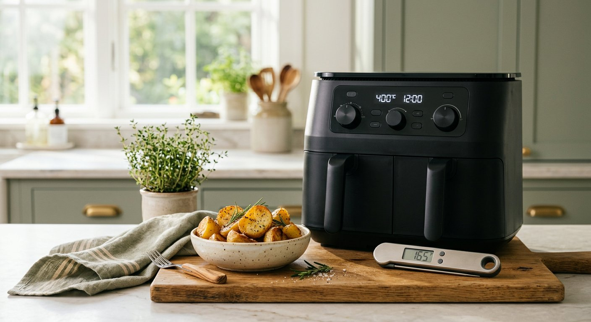

Good tools. Better questions.
A five-item shortlist you can actually check, and guides that ask what matters before the model number does.
Browse the shortlist ↘
Five things worth comparing
CHEFMAN 6 Qt Dual Basket
Two 3-qt baskets, viewing windows, Sync Finish, Hi-Fry, 1700 W.
Price: see listing
View product ↗ Air fryer · oven styleEmeril Lagasse 26QT French Door
26-qt convection oven, 24 one-touch presets, six accessories included.
Price: see listing
View product ↗ Air fryer · single basketChefman TurboFry Touch 8 Qt
8-qt basket, 4-in-1, Hi-Fry to 450 °F, dishwasher-safe parts.
Price: see listing
View product ↗ Thermometer · instant readThermoMaven 1-Sec Professional
1-second folding probe, auto-rotate LED, waterproof; ±0.5 °F as listed.
Price: see listing
View product ↗ Thermometer · wirelessCHEF iQ Sense Gen3
Three wireless probes, WiFi range, five sensors, 1000 °F heat per listing.
Price: see listing
View product ↗Before you compare models,
compare what matters.
Capacity, cleanup, footprint, and the way you actually cook make a better shortlist than a star rating alone. Use these questions to narrow your options—then verify current details with the maker and retailer.
Useful reads for a more confident buy
Basket or oven-style air fryer: what should you compare?
A decision framework for capacity, access, counter space, and the shape of meals you make.
Read the guide ↗ 02 / FITA no-hype checklist for comparing air fryer capacity
Measure the food and the space—not just the number printed on a product page.
Read the guide ↗ 03 / DAILY USECleanup and counter space: the trade-offs to assess
Questions about parts, storage, ventilation, and routine maintenance to check before buying.
Read the guide ↗ 04 / FEATURESQuestions to ask before buying a multi-function appliance
Decide which modes you will use, what they replace, and how complexity fits your kitchen.
Read the guide ↗What are you actually trying to cook?
Write down your usual portions, available counter footprint, storage plan, and cleanup tolerance. Those answers are a more useful starting point than an unverified “top pick.”
Useful first. Evidence-aware. Clear about what we know—and what we don’t.
Read our evidence and review notes →